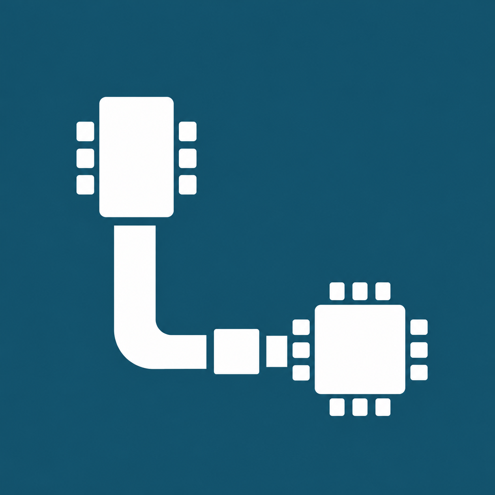

Distribución 2.0.0 y configuración portable
Extraé toda la carpeta del ZIP y abrí AFR2 Loader.exe. La distribución incluye GUI y MCP precompilados: no requiere compilador C# ni fuentes para abrirse. Conservá runtime, assets, scripts y tools. Las herramientas y proyectos para las placas se configuran por separado.
La pestaña ATmega redundante se retiró. En Flasher, Preparar firmware del Mega abre el destino ATmega de Operación; la carga y restauración siguen disponibles. Configuración conserva las opciones técnicas por placa.
Las rutas relativas parten de la carpeta del Loader. {App} apunta a ella; {AtmegaDir}, {EspDir} y {WebDir} siguen las carpetas configuradas. {Repo} es opcional y {Env} identifica el entorno PlatformIO. El script incluido usa {App}/scripts/Prepare-Web.ps1 y puede sustituirse por otro. Las rutas de perfiles anteriores se conservan; revisalas al trasladarlas.
Los datos de usuario se guardan en LOCALAPPDATA del usuario receptor, o en AFR2_LOADER_DATA_DIR si elegís otra carpeta. No se distribuyen perfiles, credenciales, backups ni registros del desarrollador. Guía de portabilidad, requisitos y configuración.

AFR2 Loader 2.0.0
Programa diseñado para simplificar la programación del auto Mecanum de la carrera de Mecatrónica. Reúne compilación, configuración, carga, monitor serie y Servidor MCP.
Hecho por Koba Chajchir · Facultad de Ciencias de la Alimentación · UNER
Apariencia
En Opciones → Apariencia elegí Claro, Oscuro o Seguir al sistema. La elección se conserva en las preferencias de este usuario. Verde identifica compilar y cargar; el subrayado carmesí indica la sección activa. En el aviso KEY/RST el foco inicial está en la casilla sin marcar: Espacio alterna la casilla; confirmar sigue siendo una acción separada.
Flujo de trabajo
- Elegí Puerto y Destino: ATmega o ESP.
- ATmega: firmware completo o comunicación. ESP: firmware propio o Paquete AT. En firmware propio elegí Firmware ESP, FileSystem o Firmware ESP + FileSystem. En AT se oculta Sección del paquete y se carga su firmware declarado.
- Antes de mostrar particiones, pulsá Confirmar tamaño de flash. La capacidad elegida es una declaración; se consulta además la flash física antes de escribir.
- Compilá la sección elegida. En AT usá Revisar paquete AT: sus BIN son precompilados. Flashear se habilita tras completar la preparación de esa sección en esta sesión. Cambios de fuentes, perfil, linker o imágenes requieren prepararla nuevamente.
- Pulsá Flashear y seguí el cableado y la confirmación. Las etapas muestran solo la operación en curso. Una nueva operación activa Seguir registro y va a la última línea; podés desmarcarlo para leer el historial.
La carga del flasher lleva a Operación para observar el proceso. Las etapas no tienen scroll; configuración y detalles pueden desplazarse en ventanas pequeñas.
Bienvenida animada: al iniciar se muestra el icono de AFR2 mientras se prepara la interfaz. Desaparece cuando la ventana está lista, sin una espera mínima añadida. Pulsá Esc para omitirla; la carga continúa. Si Windows reduce las animaciones, se elimina el cambio de escala. No indica conexión ni actividad de las placas y no se muestra al iniciar el servidor MCP stdio.
Inicio de la aplicación: abrí AFR2 Loader.exe, identificado con el icono de AFR2, en la carpeta del Loader. En la distribución 1.2.0 este ejecutable abre directamente la aplicación precompilada. Conservá toda la carpeta: no es un instalador ni un EXE independiente. La versión es 1.2.0.
Primer inicio
En el ZIP 1.2.0, abrí AFR2 Loader.exe y conservá toda su carpeta. No necesita fuentes ni compilador C# para abrir. El checkout de desarrollo conserva sus lanzadores y fuentes. No compila firmware ni abre COM al iniciar.
Se requiere Windows, Windows PowerShell y .NET Framework con su compilador C#. Configurá las rutas propias de esta computadora; no copies un COM de otra PC. Perfiles, backups y registros se guardan en %LOCALAPPDATA%\AutoFinalRobo2Loader.
Configuración por placa
El árbol separa General, ATmega y ESP con sus subsecciones. La búsqueda filtra dentro de lo seleccionado. Examinar elige archivos/carpetas y Ver explicación abre la ayuda del campo; su enlace lleva al apartado exacto de este manual.
Guardar perfil está abajo a la derecha; su flecha ofrece Guardar como. Importar y Exportar trabajan con perfiles JSON, no con imágenes del dispositivo. La configuración no mide hardware.
Flasher temporal ATmega
El flasher es un programa temporal que sustituye la aplicación del auto. Elegí método, baudios y backup antes de cargar. La información del flasher está junto al título. Abajo están Flashear último backup y Cargar flasher en ATmega.
- Con alimentación desconectada, desconectá D18 y D19 del ESP, aislá también D0/D1 del shield y retirá los jumpers paralelos. RESET del Mega queda libre.
- Cargá el flasher. La pantalla cambia a Operación y sigue el registro. El servicio se compila antes de cargarlo.
- Si se eligió backup, se leen flash/hfuse dos veces y se comparan antes de escribir. Un fallo impide continuar. No incluye EEPROM ni modifica fuses.
- Tras carga y verificación, cortá la alimentación y conectá D18/TX1 → E_RX y E_TX → D19/RX1. RESET del Mega permanece libre para ejecutar el puente.
- Detectá ESP antes de cargarlo. Para volver al auto, cargá su firmware o un backup conocido; no se restaura automáticamente.
Cambiar baudios del flasher exige compilar y cargar la variante correspondiente. EspBaud y BridgeBaud deben coincidir; el puente software no escucha arranque a 74880.
Métodos de conexión
| Método | RESET Mega | Cableado |
|---|---|---|
| Flasher ATmega | Libre | Después de instalarlo: D18/TX1 → E_RX; E_TX → D19/RX1. D0/D1 al ESP aislados. |
| Puente USB del Mega | A GND | D0/RX0 → E_RX; E_TX → D1/TX0. D18/D19 y otros emisores aislados. |
| USB–TTL externo | No requiere reset del Mega | TX adaptador → RX ESP, TX ESP → RX adaptador, GND común; VCC adaptador sin conectar y UART Mega aislada. |
Los pines E_RX/E_TX son los del selector del shield identificado; no confundir con la cabecera UART directa. Apagá antes de recablear y mantené potencia de actuadores desconectada durante servicio.
FileSystem, firmware y memoria
Confirmá primero la capacidad total de flash. Luego elegí tamaño de FileSystem entre los linkers disponibles de esa capacidad. El resumen distingue código máximo, FileSystem y reservado/no asignable.
Se aprovecha el máximo de código que admite el linker elegido. El core actual ESP8266 limita el programa principal a aproximadamente 1 MiB: disminuir FileSystem no convierte automáticamente todos los bytes restantes en código ejecutable. El espacio adicional puede quedar para reservas/OTA según el mapa; no se dibuja como código utilizable. No se modifica un linker inventando capacidad.
El layout determina offsets y tamaños de las imágenes; cambiarlo exige recompilar. La capacidad física se compara con la confirmada antes de escribir. AT usa el mapa de su proveedor: no se le asignan particiones LittleFS del firmware propio.
Compilar y habilitar Flashear
Compilar prepara únicamente la sección elegida; Compilar todo prepara las imágenes del perfil. Solo una preparación completada habilita Flashear. El Loader conserva recibos de sesión con perfil, fuentes e imágenes; antes de cargar vuelve a contrastar hashes. Firmware y FileSystem requieren sus propias preparaciones, ambas para cargarlos juntos.
AT no se recompila: Revisar paquete valida mapa, capacidad, archivos y hashes. Cargar el flasher temporal compila su propio servicio; restaurar un backup utiliza su evidencia de lectura y hashes.
Cargar ATmega
Elegí variante y compilala. Después cargá por USB al Mega con RESET libre y D0/D1 aislados del ESP. La carga de firmware usa el HEX de la variante elegida y avrdude comprueba firma y contenido. No modifica fuses, EEPROM ni bootloader. Para instalar el flasher, D18/D19 también deben estar desconectados.
Cargar y detectar ESP
Detectar ESP consulta ROM/capacidad sin escribir. ESP Detectado se marca al confirmar respuesta y capacidad; no por una casilla física ni por observar solo arranque UART.
- Prepará el transporte y mantené KEY. Pulsá y soltá solo RST ESP.
- Esperá Connecting y el inicio real de escritura. El Loader abre un aviso Ya podés soltar KEY al recibir el primer porcentaje de escritura, una sola vez por operación.
- Soltá KEY tras el aviso; no pulses RST ni desconectes alimentación. El aviso es independiente y no pausa la herramienta.
- Esptool escribe y comprueba el hash en la misma sesión. El Loader exige salida correcta y una confirmación de hash por imagen; no lanza otra consulta read_mac/verify_flash ni pide repetir KEY/RST después.
Si falta evidencia de hash o falla la herramienta, queda sin verificación acreditada. No se reescribe ni reconecta automáticamente desde el Loader. En detección sin escritura no habrá porcentaje: KEY puede soltarse al terminar la consulta.
FileSystem
FileSystem usa LittleFS e incluye los archivos Web del auto. Elegir FileSystem o Firmware + FileSystem incluye su imagen sin una casilla adicional. Su BIN debe coincidir exactamente con FsBytes y el linker. Su carga reemplaza datos y preferencias de esa región. Compilar FileSystem construye los activos y la imagen; ver sus archivos no acredita haberla cargado.
Preferencias y backups
Opciones → Preferencias separa Backups ATmega, Asistentes y Registros. Las casillas pueden ser requeridas, premarcadas o desactivadas; las comprobaciones técnicas y la confirmación de escritura permanecen. Guardar conserva la elección. Restablecer requiere guardar.
Los backups se leen del dispositivo y conservan sus históricos. El último backup puede contener un programa distinto al auto: revisar antes de restaurar. Restaurar verifica la aplicación mediante lectura posterior, sin tocar fuses ni EEPROM. Limpiar registros muestra cantidad/tamaño y solicita confirmación; no borra perfiles ni backups.
Monitor serie
Elegí COM, baudios y codificación; Abrir puerto inicia recepción. Vista permite ASCII, HEX o texto decodificado. Pausar vista no detiene el registro. Antes de usar esptool/avrdude se cierra y libera este monitor.
Copiar texto o una selección muestra Mostrar en conversor HEX. El botón conserva el texto copiado aunque cambie la selección, lo pega en el conversor y no lo transmite. La vista HEX se interpreta como bytes; la vista de texto como ASCII literal. Seleccionar texto también ofrece el acceso.
Leer ATmega abre el cableado de lectura por USART1/USB; no abre COM ni cambia el firmware por sí solo.
Enviar permite ASCII literal, HEX HH/0xHH o números decimales 0..255. CR y LF se agregan en ese orden por repetición. Hasta 64 KiB, 1000 repeticiones y pausa configurable. Detener cancela pendientes; lo ya aceptado por el driver no puede retirarse. TX y RX tienen registros separados y usan el mismo dueño exclusivo del COM.
Leer ATmega: USART1 y USB
USART es el periférico serie del ATmega. En el código del auto y el manual OSOYOO, USART1 comunica con el ESP y usa los pines digitales del Mega D18 = TX1 / PD3 y D19 = RX1 / PD2, a 115200 baudios nominales en la fuente actual. D18 transmite y D19 recibe. Usar USART1 deja USART0 (D0/RX0, D1/TX0) disponible para debug USB si el firmware implementa ese canal.
| Objetivo | Conexión de observación | Estado |
|---|---|---|
| Observar transmisión ATmega USART1 por USB Mega | Desconectá ESP/shield de D18/D19. D18/TX1 → D1/TX0 (nodo de entrada del conversor USB). Masa común. D19 no necesita cable para solo lectura. | Mega ejecutando producto, RESET libre. El firmware debe dejar TX0 en alta impedancia: si USART0 transmite simultáneamente, no unir sus salidas. No hay eco de texto garantizado; USART1 transporta protocolo binario, elegir vista HEX. |
| Comunicación bidireccional USART1 a través de USB | Además D0/RX0 (salida del conversor USB) → D19/RX1. D18/TX1 → D1/TX0. | Solo si se confirmó que USART0 del ATmega no conduce D0/D1; de lo contrario usar USB–TTL externo. El bootloader puede usar TX0 al reiniciar: retirar puentes para cargar/resetear, o usar el adaptador externo. |
| Opción de lectura aislada | TX1/D18 → RX de un USB–TTL compatible con los niveles del Mega; GND común. Para solo observar, dejar TX del adaptador sin conectar. | RESET Mega libre. COM del adaptador, baud del firmware. No usar un receptor de 3,3 V sin confirmar su tolerancia/ruta de adaptación. |
La lectura no genera mensajes ni habilita por sí sola un canal debug. El firmware puede enviar solo como respuesta a solicitudes. No unir directamente TX1 y TX0 si ambos conducen. El cableado operativo original hacia ESP se restaura con alimentación desconectada.
Leer el ESP por el USB del Mega · Mapa documentado OSOYOO/Mega
Leer ESP: selector E_TX/E_RX y USB Mega
USART0 del ATmega usa los pines D0 = RX0 / PE0 y D1 = TX0 / PE1. El conversor USB-serie del Mega transmite hacia D0 y recibe desde D1. Poner RESET del ATmega a GND detiene el micro y libera sus drivers; no redirige internamente USART1 ni conecta el ESP automáticamente.
- Apagá. Aislá D18/D19 y retirá jumpers paralelos del selector.
- Conectá E_TX (TX del ESP) → D1/TX0 para observar ESP→USB. Masa común y alimentación del shield identificadas.
- Si necesitás transmitir desde USB: D0/RX0 → E_RX (RX del ESP) por la ruta de adaptación identificada del shield. Para solo lectura ese cable puede quedar desconectado.
- Mantené RESET del ATmega → GND (no RST del ESP). Alimentá y abrí el COM USB del Mega. Para mensaje de arranque ESP: 74880; para la aplicación: su baud configurado.
Este cruce externo usa el conversor USB ya conectado a D0/D1. No es el emparejamiento normal del selector para Mega ejecutando código (E_RX↔D1 y E_TX↔D0). E_TX/E_RX del selector no son automáticamente la cabecera UART directa ESP. Retirá los puentes antes de reanudar la aplicación o cargar el Mega.
Conversor HEX / ASCII
Elegí HEX → ASCII o ASCII literal → HEX. Pegar coloca datos; Convertir ejecuta la conversión. Los datos traídos del monitor aparecen automáticamente en la entrada, sin conversión implícita. Copiar HEX normalizado está bajo la entrada y Copiar resultado bajo la salida.
HEX admite HH, 0xHH, espacios y pares continuos. ASCII literal no interpreta escapes escritos. Bytes no imprimibles se muestran escapados según Vista; CR/LF/tab pueden mostrarse reales. No analiza comandos ni abre puertos.
Resultados, eventos e historial
Completado indica fin de la operación solicitada. Detectar no escribe; un arranque UART no prueba comunicación bidireccional; verificar bytes no prueba arranque del programa ni comportamiento del auto.
Eventos y errores ofrece Ver detalles con botón estable de alto completo en la columna Acciones. Abrir un detalle no vuelve amarillo el botón ni su fondo. Historial de sesión conserva trabajos de esta ventana.
Problemas y diagnóstico
COM ocupado: cerrá monitores externos; el Loader comprueba disponibilidad antes de usarlo. Sin respuesta ESP: revisar COM, alimentación, método, KEY/RST y ruta TX/RX. No cambiar silenciosamente entre RESET libre y RESET-GND. Conservá el registro y el código de salida ante un fallo.
Flashear deshabilitado: prepará la sección actual y confirmá capacidad ESP. Si cambian perfil, fuentes, layout o imágenes, recompilá. Un fallo de hash integrado conserva el resultado sin verificación acreditada; no inicia una segunda escritura desde el Loader.
Servidor MCP
1.1.1: autorización de sesión para omitir confirmaciones manuales
Ver todas las herramientas y acciones MCP
El servidor afr2-loader usa stdio en Windows y comparte la GUI del mismo usuario mediante un canal local. No tiene URL HTTP ni credenciales. El conector activado y una conexión comprobada son estados diferentes.
Mostrar prompt agregar MCP presenta un prompt genérico para cualquier IA compatible con servidores MCP locales. Incluye nombre, comando, argumentos y ruta de Mcp.ps1. Copialo en la IA y adaptá el formato a su cliente; un cliente remoto sin stdio local no puede conectarse inventando una URL.
Ejecutar prueba genera una sesión/testId nuevos y abre una ventana con el prompt para pegar en Codex. Pulsá Copiar prompt de prueba. La prueba vence en cinco minutos y solo acredita conexión con esa ventana; no abre COM ni solicita operaciones.
Las solicitudes se revisan en tabla. Rechazar y Revisar y continuar están debajo. Autoaceptar es opcional y solo se activa por elección explícita del usuario en esa sesión. Configurar/probar el servidor no autoriza cargas ni cambios de aprobación.
Ayuda del servidor MCP: herramientas y acciones
Acceso desde Servidor MCP → Ver acciones MCP. Estas son las herramientas disponibles del servidor afr2-loader. Consultar información no abre el puerto ni inicia una carga.
| Herramienta | Qué permite hacer |
|---|---|
loader_status | Consultar estado de la ventana, conexión MCP, trabajo activo y autoaceptación de la sesión. |
loader_connection_test | Comprobar conexión con sessionId y testId generados por Ejecutar prueba. No prueba hardware. |
loader_ports | Enumerar los puertos presentes sin abrirlos. |
loader_profile | Consultar perfil visible, rutas, familia ESP y memoria configurada. |
loader_serial | Consultar estado y texto incremental de la captura del monitor. No abre ni cierra COM ni envía datos. |
loader_request_profile | Solicitar cambios del perfil mediante values y requestId. Se revisan en la GUI o aplican con la autoaceptación elegida para la sesión. |
loader_request_session_options | Solicitar omitir o restablecer confirmaciones manuales de esta sesión. Activar exige aceptar SIEMPRE la advertencia en la ventana. Ver contrato y ejemplo. |
loader_request_operation | Solicitar una de las operaciones de la tabla siguiente mediante action y requestId; port para diagnóstico/carga, listenBoot opcional para ESP. Devuelve jobId. |
loader_job | Consultar estado y registro de un jobId. Continuar desde nextCursor para leer más salida sin repetir la operación. |
loader_request_cancel | Solicitar cancelación de un trabajo pendiente o activo por jobId. Consultar su resultado después. |
Operaciones de loader_request_operation
| action | Qué hace |
|---|---|
build_mega | Compilar firmware AVR de producto, comunicación y biblioteca. |
build_esp | Compilar firmware propio ESP con el entorno/layout elegido; en familia AT, revisar el paquete precompilado. |
build_web_fs | Preparar contenido con el script configurable y generar LittleFS. El nombre histórico no exige Web ni npm. En AT revisa el paquete precompilado. |
build_all | Compilar ATmega y preparar ESP según familia, incluyendo FileSystem si corresponde. Se detiene ante errores. |
probe_esp | Asistente ESP y consulta ROM/capacidad física; escucha KEY/RST opcional. No escribe flash. |
install_mega_flasher | Compilar y cargar/verificar el flasher temporal, con backup leído si está seleccionado. Selecciona mega_bridge y alinea baudios. |
restore_mega_product | Alias de flash_mega_backup: restaurar la aplicación del último backup completado. |
flash_mega_backup | Cargar la aplicación del último backup completado con comprobaciones y lectura posterior; no programa bootloader, fuses ni EEPROM. |
flash_mega | Cargar HEX ATmega con asistente de cableado y verificación avrdude. |
flash_esp | Cargar firmware propio ESP o regiones firmware/system del paquete AT elegido, con consulta física previa y verificación integrada. |
flash_fs | Cargar solamente LittleFS o las regiones filesystem declaradas en el paquete AT; requiere filesystem habilitado. |
flash_esp_fs | Cargar firmware y filesystem de la misma familia/layout, verificando las imágenes elegidas. |
Las solicitudes conservan la revisión de la ventana y la opción de autoaceptación por sesión. Un job aceptado no implica ejecución terminada ni hardware verificado. Consultá loader_job hasta conocer el resultado; no repitas una solicitud que ya tiene jobId. La carga requiere preparación de su sección y conserva asistentes físicos y verificación.
Volver a configuración y conexión MCP · Preparación FileSystem por scripts (1.1)
1.1.1 — Omitir confirmaciones manuales durante la sesión
En Servidor MCP, debajo de Autoaceptar todas las solicitudes de esta sesión, aparece Omitir confirmaciones manuales de preparación (solo esta sesión). Está desactivada al iniciar y es independiente de Autoaceptar.
Al activarla desde la ventana o pedir su activación por MCP, se muestra obligatoriamente una advertencia local con Rechazar y Aceptar y continuar. Solo se activa después de aceptar en la ventana: el servidor no puede aceptar esa advertencia, ni siquiera con Autoaceptar habilitado. Cerrar el diálogo, pulsar Esc o rechazar conserva la opción desactivada. Si la solicitud se cancela mientras el aviso está abierto, aceptarlo después no la activa.
Esta opción presupone que la persona verificó físicamente cableado, alimentación, aislación y desconexión de potencia de los actuadores. Se dan por aceptadas las casillas y los diálogos manuales de preparación, diagnóstico y carga, tanto en GUI como en MCP. También se omite el aviso de continuar sin backup nuevo cuando Backup está desmarcado; no se cambia la elección de crear backup. Si cambia la placa o su montaje, desactivá la opción antes de continuar.
Las comprobaciones automáticas siguen activas: disponibilidad de puerto, firma AVR, capacidad ESP, coherencia de layout, fuentes/recibos, hashes, resultado de herramientas y verificación de carga. Los errores siguen deteniendo la operación. Desde 1.1.2, KEY/RST exige un aviso y confirmación local obligatorios que restauran la ventana y aparecen al frente, incluso al omitir el resto de confirmaciones. Ver secuencia de intervención física. Los mensajes informativos posteriores a la carga se conservan.
Desmarcar la casilla restablece las confirmaciones siguientes. Cerrar la aplicación también elimina esta autorización; no se guarda en perfiles ni preferencias. Cada reactivación exige aceptar nuevamente la advertencia. Se registra la autorización y cada confirmación omitida.
Solicitarlo por MCP
loader_request_session_options recibe {"skipManualChecks":true,"requestId":"checks-sesion-01"}. Devuelve jobId; se muestra la advertencia en la GUI aun cuando Autoaceptar esté apagado. Consultá loader_job: awaiting_local_confirmation espera aceptación humana; completed indica cambio aplicado y rejected indica rechazo. loader_status.skipManualChecks muestra el estado real. Para desactivar, enviá skipManualChecks:false con un requestId nuevo; no requiere advertencia. No solicites operaciones hasta conocer el resultado.
1.1.2 — Intervención física ESP obligatoria
Para consultar o cargar el ESP, el Loader presenta Intervención física necesaria · KEY y RST del ESP. Restaura su ventana si está minimizada y trae el aviso al frente. Este paso no se puede omitir mediante Autoaceptar, la autorización de sesión ni listenBoot:false. No se agrega este requisito al flasheo del ATmega.
Con Escuchar arranque ESP (74880) activo en USB–TTL o puente USB, primero pulsá Continuar y esperá PUERTO LISTO. Después mantené KEY, apretá RST y soltá solo RST. El Loader espera el mensaje real de modo programación; cancelar o un error detiene la operación.
Sin escucha, o con el flasher Mega de baud fijo, se muestra la secuencia y una casilla local: Realicé la secuencia KEY/RST y sigo manteniendo KEY. Hasta marcarla y pulsar Confirmar y continuar no se consulta la ROM ni se escribe. Se preserva RESET del Mega libre para el flasher software; no se intenta escuchar 74880 en ese puente.
Los botones son KEY (entrada GPIO0 del ESP) y RST del shield. No pulses RESET del ATmega. Conservá KEY hasta el aviso de soltarlo al primer porcentaje de escritura o hasta terminar la consulta si solo estás detectando. Confirmar la acción física no acredita respuesta ROM: se conservan la consulta real y todas las comprobaciones de capacidad, archivos y verificación.
Acerca de
AFR2 Loader · Koba Chajchir
Diseñado para simplificar la programación del auto Mecanum de la carrera de Mecatrónica, Facultad de Ciencias de la Alimentación de la Universidad Nacional de Entre Ríos.
Logotipo de aplicación AFR2 aportado por el usuario. Identidad institucional UNER/FCAL conservada desde Documentacion; sin alteración de las imágenes originales.
Ayuda específica de configuración
Nombre del perfil
Ejemplo: Robot del grupo / notebook de Juan
Clave del perfil: Name. Cambiar este valor modifica la configuración; no comprueba ni modifica la placa por sí solo.
Conexión ESP
mega_bridge: flasher D18/D19 y RESET libre; usb-ttl: adaptador externo 3,3 V. El método D0/D1 con RESET-GND fue retirado (AFR2-20261106-11)
Clave del perfil: EspTransport. Cambiar este valor modifica la configuración; no comprueba ni modifica la placa por sí solo.
Baudios flasher ATmega
115200, 57600, 38400 o 9600; requiere cargar esa variante y usar igual EspBaud
Clave del perfil: BridgeBaud. Cambiar este valor modifica la configuración; no comprueba ni modifica la placa por sí solo.
Espera al abrir puente
Segundos después de abrir COM, antes de esptool; permite salir del bootloader Mega. 3 recomendado, 1..15
Clave del perfil: BridgeStartupSeconds. Cambiar este valor modifica la configuración; no comprueba ni modifica la placa por sí solo.
Firmware ESP
web: firmware Arduino propio; at: paquete AT. Ambos se cargan por USB/ROM.
Clave del perfil: EspFirmwareMode. Cambiar este valor modifica la configuración; no comprueba ni modifica la placa por sí solo.
Incluir LittleFS Web
true o false; el firmware y su linker deben corresponder a la elección
Clave del perfil: WebUseFilesystem. Cambiar este valor modifica la configuración; no comprueba ni modifica la placa por sí solo.
Layout Web
custom conserva el perfil; otro valor es el nombre de un linker instalado elegido arriba
Clave del perfil: WebLayoutPreset. Cambiar este valor modifica la configuración; no comprueba ni modifica la placa por sí solo.
Paquete AT / BIN
BIN completo Ai-Thinker v1.5.4.1 reconocido o manifiesto afr2-esp-at-package-1 con regiones/layouts del proveedor
Clave del perfil: AtPackage. Cambiar este valor modifica la configuración; no comprueba ni modifica la placa por sí solo.
Layout del paquete AT
ID declarado dentro del paquete; no usa offsets Arduino/LittleFS
Clave del perfil: AtLayoutId. Cambiar este valor modifica la configuración; no comprueba ni modifica la placa por sí solo.
Incluir filesystem AT
true o false; solo regiones filesystem declaradas en el paquete
Clave del perfil: AtUseFilesystem. Cambiar este valor modifica la configuración; no comprueba ni modifica la placa por sí solo.
Raíz del repositorio
Carpeta ProyectoRobotica2. No se necesita Git para cargar archivos externos.
Clave del perfil: Repo. Cambiar este valor modifica la configuración; no comprueba ni modifica la placa por sí solo.
Proyecto ATmega
Carpeta con Makefile
Clave del perfil: AtmegaDir. Cambiar este valor modifica la configuración; no comprueba ni modifica la placa por sí solo.
Proyecto ESP
Carpeta con platformio.ini
Clave del perfil: EspDir. Cambiar este valor modifica la configuración; no comprueba ni modifica la placa por sí solo.
Proyecto Web
Carpeta con package.json
Clave del perfil: WebDir. Cambiar este valor modifica la configuración; no comprueba ni modifica la placa por sí solo.
GNU Make
make.exe; no nmake.exe
Clave del perfil: Make. Cambiar este valor modifica la configuración; no comprueba ni modifica la placa por sí solo.
Compilador AVR
avr-gcc.exe
Clave del perfil: Gcc. Cambiar este valor modifica la configuración; no comprueba ni modifica la placa por sí solo.
Bibliotecario AVR
avr-ar.exe
Clave del perfil: Ar. Cambiar este valor modifica la configuración; no comprueba ni modifica la placa por sí solo.
Conversor HEX
avr-objcopy.exe
Clave del perfil: Objcopy. Cambiar este valor modifica la configuración; no comprueba ni modifica la placa por sí solo.
Cargador AVR
avrdude.exe
Clave del perfil: Avrdude. Cambiar este valor modifica la configuración; no comprueba ni modifica la placa por sí solo.
Configuración avrdude
avrdude.conf de la misma instalación
Clave del perfil: AvrdudeConfig. Cambiar este valor modifica la configuración; no comprueba ni modifica la placa por sí solo.
PlatformIO
platformio.exe o pio.exe
Clave del perfil: Pio. Cambiar este valor modifica la configuración; no comprueba ni modifica la placa por sí solo.
Node.js
node.exe; se añade su carpeta al PATH de los procesos
Clave del perfil: Node. Cambiar este valor modifica la configuración; no comprueba ni modifica la placa por sí solo.
npm
npm.cmd
Clave del perfil: Npm. Cambiar este valor modifica la configuración; no comprueba ni modifica la placa por sí solo.
Python de esptool
python.exe con pyserial y dependencias de esptool
Clave del perfil: Python. Cambiar este valor modifica la configuración; no comprueba ni modifica la placa por sí solo.
Entrada de esptool
esptool.py; no seleccionar el ejecutable de otra versión
Clave del perfil: Esptool. Cambiar este valor modifica la configuración; no comprueba ni modifica la placa por sí solo.
Versión mayor esptool
4 o 5; adapta guiones/barras bajas de su CLI
Clave del perfil: EsptoolMajor. Cambiar este valor modifica la configuración; no comprueba ni modifica la placa por sí solo.
Entorno PlatformIO
Nombre entre env:... de platformio.ini
Clave del perfil: PioEnv. Cambiar este valor modifica la configuración; no comprueba ni modifica la placa por sí solo.
HEX ATmega
Firmware de producto afr2.hex; no el HEX de comunicación sola
Clave del perfil: Hex. Cambiar este valor modifica la configuración; no comprueba ni modifica la placa por sí solo.
BIN firmware ESP
firmware.bin del entorno elegido
Clave del perfil: EspBin. Cambiar este valor modifica la configuración; no comprueba ni modifica la placa por sí solo.
Imagen LittleFS
littlefs.bin del mismo entorno/layout
Clave del perfil: FsBin. Cambiar este valor modifica la configuración; no comprueba ni modifica la placa por sí solo.
Linker ESP
eagle.flash.4m3m.ld o el linker exacto de tu build; valida rangos
Clave del perfil: Linker. Cambiar este valor modifica la configuración; no comprueba ni modifica la placa por sí solo.
Offset firmware ESP
Offset flash, no dirección de memoria CPU; habitual 0x0
Clave del perfil: FirmwareOffset. Cambiar este valor modifica la configuración; no comprueba ni modifica la placa por sí solo.
Offset LittleFS
Debe coincidir con _FS_start del linker menos 0x40200000
Clave del perfil: FsOffset. Cambiar este valor modifica la configuración; no comprueba ni modifica la placa por sí solo.
Tamaño LittleFS (bytes)
Debe coincidir exactamente con el rango del linker y littlefs.bin
Clave del perfil: FsBytes. Cambiar este valor modifica la configuración; no comprueba ni modifica la placa por sí solo.
Límite BIN firmware (bytes)
Límite de programa del layout; perfil actual 1044464
Clave del perfil: FirmwareMax. Cambiar este valor modifica la configuración; no comprueba ni modifica la placa por sí solo.
Flash esperada (MiB)
Se compara contra flash_id real antes de cada escritura
Clave del perfil: FlashMB. Cambiar este valor modifica la configuración; no comprueba ni modifica la placa por sí solo.
Modo SPI
keep, dio, dout, qio o qout. keep conserva la cabecera del BIN
Clave del perfil: FlashMode. Cambiar este valor modifica la configuración; no comprueba ni modifica la placa por sí solo.
Frecuencia SPI
keep, 20m, 26m, 40m u 80m
Clave del perfil: FlashFreq. Cambiar este valor modifica la configuración; no comprueba ni modifica la placa por sí solo.
Baudios carga Mega
Habitual 115200 en bootloader Mega2560
Clave del perfil: MegaBaud. Cambiar este valor modifica la configuración; no comprueba ni modifica la placa por sí solo.
Baudios esptool
Habitual 115200; 9600 puede ayudar al diagnóstico
Clave del perfil: EspBaud. Cambiar este valor modifica la configuración; no comprueba ni modifica la placa por sí solo.
Microcontrolador AVR
atmega2560
Clave del perfil: Mcu. Cambiar este valor modifica la configuración; no comprueba ni modifica la placa por sí solo.
Protocolo bootloader AVR
wiring para Mega2560
Clave del perfil: Programmer. Cambiar este valor modifica la configuración; no comprueba ni modifica la placa por sí solo.
Firma AVR esperada
0x1e9801; se exige en la salida antes de declarar éxito
Clave del perfil: Signature. Cambiar este valor modifica la configuración; no comprueba ni modifica la placa por sí solo.
Tiempo máximo por comando
Incluye build y verificación; mínimo 60, recomendado 900
Clave del perfil: TimeoutSeconds. Cambiar este valor modifica la configuración; no comprueba ni modifica la placa por sí solo.
Espera KEY/RST
Segundos de escucha a 74880; recomendado 90
Clave del perfil: BootWaitSeconds. Cambiar este valor modifica la configuración; no comprueba ni modifica la placa por sí solo.
Leer ESP desde el monitor serie
El botón Leer ESP abre esta guía. Seleccioná el puerto y los baudios correspondientes al firmware instalado y abrí el monitor. Reiniciá el ESP con RST para observar su salida. El mensaje de arranque del ESP8266 se emite a 74880 baudios; la aplicación o el firmware AT pueden usar otra velocidad. No uses 74880 con el puente de software Mega de velocidad fija.
Para leer el firmware AT original, elegí la velocidad configurada por ese firmware. Podés enviar AT desde el monitor con CR y LF y observar su respuesta. El Loader no envía comandos automáticamente al abrir el puerto. El firmware propio no utiliza comandos AT.
Para identificar la ROM y la capacidad física, usá Consultar tamaño de flash en Operación: sigue el asistente de cableado y KEY/RST. El Loader libera el monitor y ejecuta esptool flash_id (flash-id en versión 5), sin escritura. Solo una respuesta válida confirma la capacidad y actualiza el perfil. Al terminar, volvé a elegir FileSystem o a preparar la sección: la consulta no inicia compilación ni carga. Una lectura ROM no comprueba el firmware instalado.
Loader 1.0.0
Navegación: Operación, Flasher, Monitor serie, Historial de sesión, Eventos y errores, Conversor HEX / ASCII, Servidor MCP y Configuración. Flasher conserva el acceso a preparar firmware del Mega en Operación; el monitor mantiene su guía de lectura. Leer ATmega y Leer ESP abren las instrucciones de lectura; no extraen una copia de la flash.
La consulta automática de capacidad reemplaza la declaración manual descrita en revisiones anteriores. Si falla o se cancela, no se confirma el tamaño. Antes de escribir se conserva la comprobación física del cargador.
Versión 1.1 — FileSystem mediante scripts
La preparación ejecuta el script configurado, que compila o copia el contenido a ESP/data. El Loader genera después la imagen LittleFS con PlatformIO y el layout elegido. No exige una Web, npm ni un manifiesto web. Nuestro script Prepare-Web.ps1 conserva npm run build:esp y el manifiesto de nuestra Web.
En Configuración → ESP → Preparación FileSystem elegí el archivo de script, carpeta de fuentes, ejecutable del intérprete y argumentos como lista JSON. Para PowerShell: ["-NoProfile","-ExecutionPolicy","Bypass","-File","{Script}"]. Para Python: ["{Script}"]. Guardá el perfil. Bypass se limita al proceso hijo y no cambia la política persistente de Windows. Ante «running scripts is disabled», corregí esos argumentos en el perfil guardado; no hace falta recompilar el Loader instalado. El lanzador entrega AFR2_FS_SOURCE_DIR y AFR2_FS_DATA_DIR; el script debe escribir el conjunto deseado en la segunda carpeta y salir con código 0. No debe abrir puertos ni flashear. Los errores detienen la generación de la imagen.
Guía completa: configuración, contrato, migración y ejemplos de scripts. Ejemplos incluidos: nuestra Web y archivos sin Web. El ejemplo de archivos requiere una carpeta payload dentro de Fuentes del FileSystem y ESP/data vacío; respaldá y retirá manualmente contenido anterior para evitar mezclar datasets.
El script decide cómo preparar el contenido; esta versión sigue generando LittleFS con PlatformIO. Conservá entorno/linker/offset/tamaño e imagen acordes al firmware. Para preparar: consultá capacidad, elegí FileSystem y pulsá Compilar; para escribir usá después la acción de carga. Cambios de script, perfil, entradas o salida requieren preparar otra vez. El filesystem de un paquete AT sigue usando sus imágenes precompiladas.
Script de preparación FileSystem
Archivo propio que prepara ESP/data; valor inicial scripts/Prepare-Web.ps1 del Loader. Configuración y ejemplos.
Fuentes del FileSystem
Carpeta de trabajo e inputs del script; no debe contener ESP/data ni estar dentro de ella. El ejemplo de archivos lee su subcarpeta payload. Separá salidas e inputs.
Ejecutable del script
Intérprete que ejecuta el archivo elegido: PowerShell, Python u otro ejecutable. Debe existir. El Loader no cambia políticas de ejecución.
Argumentos del script
Lista JSON de textos separados, con {Script} como marcador de ruta. PowerShell: ["-NoProfile","-ExecutionPolicy","Bypass","-File","{Script}"]. Python: ["{Script}"]. No se interpreta una línea de shell.
Prueba KEY/RST y boot
En Flasher, abrí Probar KEY/RST y boot, elegí el COM del Mega y pulsá Probar KEY + RST y leer boot. Requiere transistores D32=KEY (violeta), D33=RST (marrón), GND común y D18/D19 conectados al ESP. El flasher de servicio actualizado captura el mensaje ROM a 74880 por USART1 sin cambiar la velocidad USB. Un flasher anterior se detecta antes de accionar los pines.
La ventana distingue secuencia confirmada, boot de programación (modo 1), otro modo y ausencia de mensaje legible. Muestra ASCII y HEX. No carga firmware ni comprueba comunicación ROM de ida y vuelta. Al terminar suelta KEY/RST, restaura la UART y desactiva el automático; no pulsa RST otra vez. El ESP queda en el modo observado. La nueva fuente del flasher requiere compilación y carga separadas; abrir el diagnóstico no lo instala.